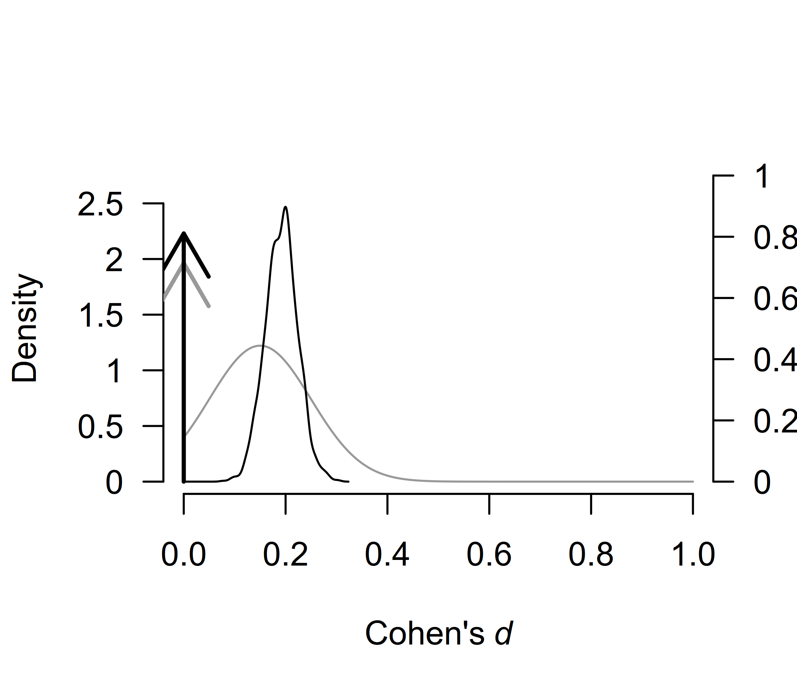
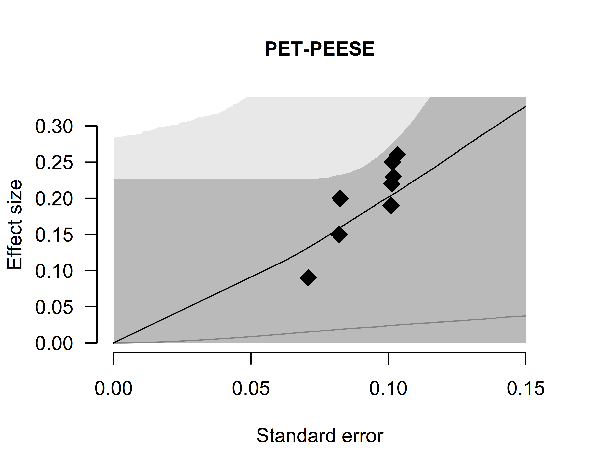

Fitting Custom Meta-Analytic Ensembles
František Bartoš
2025-06-10
Source:vignettes/CustomEnsembles.Rmd
CustomEnsembles.RmdThis vignette provides a step-by-step guide to fitting custom meta-analytic ensembles using the RoBMA R package. By the end of this guide, you will be able to construct and evaluate custom meta-analytic models.
By default, the RoBMA() function specifies models as a
combination of all supplied prior distributions (across null and
alternative specification), with their prior model weights being equal
to the product of prior distributions’ weights. This results in the 36
meta-analytic models using the default settings (Bartoš et al.,
2023).
In another vignette, we illustrated
that RoBMA can be also utilized for reproducing Bayesian Model-Averaged
Meta-Analysis (BMA) (Bartoš et al., 2021; Gronau
et al., 2017, 2021). However, the package was built as a
framework for estimating highly customized meta-analytic model
ensembles. Here, we are going to illustrate how to do exactly that (see
Bartoš et al. (2022) for a tutorial paper
on customizing the model ensemble with JASP).
Please keep in mind that all models should be justified by theory. Furthermore, the models should be tested to make sure that the ensemble can perform as intended a priori to drawing inference from it. The following sections are only for illustrating the functionality of the package. We provide a complete discussion with the relevant sources in the Example section of Bartoš et al. (2023).
The Dataset
To illustrate the custom model building procedure, we use data from the infamous Bem (2011) “Feeling the future” precognition study. We use coding of the results as summarized by Bem in one of his later replies (Bem et al., 2011).
library(RoBMA)
#> Loading required namespace: runjags
#> Loading required namespace: mvtnorm
#> RoBMA version 3.3 now features spike-and-slab style model-averaging via the 'algorithm = "ss"' argument.
#> See 'vignette("FastRoBMA", package = "RoBMA")' for more details ('algorithm = "ss"' argument will become the default setting in the future major release of the package).
data("Bem2011", package = "RoBMA")
Bem2011
#> d se study
#> 1 0.25 0.10155048 Detection of Erotic Stimuli
#> 2 0.20 0.08246211 Avoidance of Negative Stimuli
#> 3 0.26 0.10323629 Retroactive Priming I
#> 4 0.23 0.10182427 Retroactive Priming II
#> 5 0.22 0.10120277 Retroactive Habituation I - Negative trials
#> 6 0.15 0.08210765 Retroactive Habituation II - Negative trials
#> 7 0.09 0.07085372 Retroactive Induction of Boredom
#> 8 0.19 0.10089846 Facilitation of Recall I
#> 9 0.42 0.14752627 Facilitation of Recall IIThe Custom Ensemble
We consider the following scenarios as plausible explanations for the data, and decide to include only those models into the meta-analytic ensemble:
- there is absolutely no precognition effect - a fixed effects model assuming the effect size to be zero (),
- the experiments measured the same underlying precognition effect - a fixed effects model (),
- each of the experiments measured a slightly different precognition effect - a random effects model (),
- there is absolutely no precognition effect and the results can be explained by publication bias, modeled with one of the following publication bias adjustments: - 4.1) one-sided selection operating on significant p-values (), - 4.2) one-sided selection operating on significant and marginally significant p-values (), - 4.3) PET correction for publication bias which adjusts for the relationship between effect sizes and standard errors (), - 4.4) PEESE correction for publication bias which adjusts for the relationship between effect sizes and standard errors squared ().
If we were to fit the ensemble using the RoBMA()
function and specifying all of the priors, we would have ended with 2
(effect or no effect) * 2 (heterogeneity or no heterogeneity) * 5 (no
publication bias or 4 ways of adjusting for publication bias) = 20
models. That is 13 models more than requested. Furthermore, we could not
specify different parameters for the prior distributions for each model.
The following process allows this, though we do not utilize it here.
We start with fitting only the first model using the
RoBMA() function and we will continuously update the fitted
object to include all of the models.
Model 1
We initiate the model ensemble by specifying only the first model
with the RoBMA() function. We explicitly specify prior
distributions for all components and set the prior distributions to
correspond to the null hypotheses and set the seed to ensure
reproducibility of the results.
fit <- RoBMA(d = Bem2011$d, se = Bem2011$se, study_names = Bem2011$study,
priors_effect = NULL, priors_heterogeneity = NULL, priors_bias = NULL,
priors_effect_null = prior("spike", parameters = list(location = 0)),
priors_heterogeneity_null = prior("spike", parameters = list(location = 0)),
priors_bias_null = prior_none(),
seed = 1)We verify that the ensemble contains only the single specified model
with the summary() function by setting
type = "models".
summary(fit, type = "models")
#> Call:
#> RoBMA(d = Bem2011$d, se = Bem2011$se, study_names = Bem2011$study,
#> priors_effect = NULL, priors_heterogeneity = NULL, priors_bias = NULL,
#> priors_effect_null = prior("spike", parameters = list(location = 0)),
#> priors_heterogeneity_null = prior("spike", parameters = list(location = 0)),
#> priors_bias_null = prior_none(), seed = 1)
#>
#> Robust Bayesian meta-analysis
#> Models overview:
#> Model Prior Effect Prior Heterogeneity Prior prob. log(marglik) Post. prob.
#> 1 Spike(0) Spike(0) 1.000 -3.28 1.000
#> Inclusion BF
#> InfModel 2
Before we add the second model to the ensemble, we need to decide on
the prior distribution for the mean parameter. If precognition were to
exist, the effect would be small since all casinos would be bankrupted
otherwise. The effect would also be positive, since any deviation from
randomness could be characterized as an effect. Therefore, we decide to
use a normal distribution with mean = 0.15, standard deviation 0.10, and
truncated to the positive range. This sets the prior density around
small effect sizes. To get a better grasp of the prior distribution, we
visualize it using the plot()) function (the figure can
also be created using the ggplot2 package by adding
plot_type = "ggplot" argument).

We add the second model to the ensemble using the
update.RoBMA() function. The function can also be used for
many other purposes - updating settings, prior model weights, and
refitting failed models. Here, we supply the fitted ensemble object and
add an argument specifying the prior distributions of each component for
the additional model. Since we want to add Model 2 - we set the prior
for the
parameter to be treated as a prior belonging to the alternative
hypothesis of the effect size component and the remaining priors treated
as belonging to the null hypotheses. If we wanted, we could also specify
prior_weights argument, to change the prior probability of
the fitted model but we do not utilize this option here and keep the
default value, which sets the prior weights for the new model to
1. (Note that the arguments for specifying prior
distributions in update.RoBMA() function are
prior_X - in singular, in comparison to
RoBMA() function that uses priors_X in
plural.)
fit <- update(fit,
prior_effect = prior("normal", parameters = list(mean = .15, sd = .10), truncation = list(lower = 0)),
prior_heterogeneity_null = prior("spike", parameters = list(location = 0)),
prior_bias_null = prior_none())We can again inspect the updated ensemble to verify that it contains both models. We see that Model 2 notably outperformed the first model and attained all of the posterior model probability.
summary(fit, type = "models")
#> Call:
#> RoBMA(d = Bem2011$d, se = Bem2011$se, study_names = Bem2011$study,
#> priors_effect = NULL, priors_heterogeneity = NULL, priors_bias = NULL,
#> priors_effect_null = prior("spike", parameters = list(location = 0)),
#> priors_heterogeneity_null = prior("spike", parameters = list(location = 0)),
#> priors_bias_null = prior_none(), seed = 1)
#>
#> Robust Bayesian meta-analysis
#> Models overview:
#> Model Prior Effect Prior Heterogeneity Prior prob. log(marglik)
#> 1 Spike(0) Spike(0) 0.500 -3.28
#> 2 Normal(0.15, 0.1)[0, Inf] Spike(0) 0.500 14.91
#> Post. prob. Inclusion BF
#> 0.000 0.000
#> 1.000 79422247.251Models 3-4.4
Before we add the remaining models to the ensemble using the
update() function, we need to decide on the remaining prior
distributions. Specifically, on the prior distribution for the
heterogeneity parameter
,
and the publication bias adjustment parameters
(for the selection models’ weightfunctions) and PET and PEESE for the
PET and PEESE adjustment.
For Model 3, we use the usual inverse-gamma(1, .15) prior distribution based on empirical heterogeneity estimates (Erp et al., 2017) for the heterogeneity parameter . For Models 4.1-4.4 we use the default settings for the publication bias adjustments as outlined in the Appendix B of (Bartoš et al., 2023).
Now, we just need to add the remaining models to the ensemble using
the update() function as already illustrated.
### adding Model 3
fit <- update(fit,
prior_effect = prior("normal", parameters = list(mean = .15, sd = .10), truncation = list(lower = 0)),
prior_heterogeneity = prior("invgamma", parameters = list(shape = 1, scale = .15)),
prior_bias_null = prior_none())
### adding Model 4.1
fit <- update(fit,
prior_effect_null = prior("spike", parameters = list(location = 0)),
prior_heterogeneity_null = prior("spike", parameters = list(location = 0)),
prior_bias = prior_weightfunction("one.sided", parameters = list(alpha = c(1, 1), steps = c(0.05))))
### adding Model 4.2
fit <- update(fit,
prior_effect_null = prior("spike", parameters = list(location = 0)),
prior_heterogeneity_null = prior("spike", parameters = list(location = 0)),
prior_bias = prior_weightfunction("one.sided", parameters = list(alpha = c(1, 1, 1), steps = c(0.05, 0.10))))
### adding Model 4.3
fit <- update(fit,
prior_effect_null = prior("spike", parameters = list(location = 0)),
prior_heterogeneity_null = prior("spike", parameters = list(location = 0)),
prior_bias = prior_PET("Cauchy", parameters = list(0, 1), truncation = list(lower = 0)))
### adding Model 4.4
fit <- update(fit,
prior_effect_null = prior("spike", parameters = list(location = 0)),
prior_heterogeneity_null = prior("spike", parameters = list(location = 0)),
prior_bias = prior_PEESE("Cauchy", parameters = list(0, 5), truncation = list(lower = 0)))We again verify that all of the requested models are included in the
ensemble using the summary()) function with
type = "models" argument.
summary(fit, type = "models")
#> Call:
#> RoBMA(d = Bem2011$d, se = Bem2011$se, study_names = Bem2011$study,
#> priors_effect = NULL, priors_heterogeneity = NULL, priors_bias = NULL,
#> priors_effect_null = prior("spike", parameters = list(location = 0)),
#> priors_heterogeneity_null = prior("spike", parameters = list(location = 0)),
#> priors_bias_null = prior_none(), seed = 1)
#>
#> Robust Bayesian meta-analysis
#> Models overview:
#> Model Prior Effect Prior Heterogeneity
#> 1 Spike(0) Spike(0)
#> 2 Normal(0.15, 0.1)[0, Inf] Spike(0)
#> 3 Normal(0.15, 0.1)[0, Inf] InvGamma(1, 0.15)
#> 4 Spike(0) Spike(0)
#> 5 Spike(0) Spike(0)
#> 6 Spike(0) Spike(0)
#> 7 Spike(0) Spike(0)
#> Prior Bias Prior prob. log(marglik)
#> 0.143 -3.28
#> 0.143 14.91
#> 0.143 12.85
#> omega[one-sided: .05] ~ CumDirichlet(1, 1) 0.143 13.70
#> omega[one-sided: .1, .05] ~ CumDirichlet(1, 1, 1) 0.143 12.58
#> PET ~ Cauchy(0, 1)[0, Inf] 0.143 15.75
#> PEESE ~ Cauchy(0, 5)[0, Inf] 0.143 15.65
#> Post. prob. Inclusion BF
#> 0.000 0.000
#> 0.168 1.210
#> 0.021 0.132
#> 0.050 0.318
#> 0.016 0.100
#> 0.391 3.845
#> 0.353 3.278Using the Fitted Ensemble
Finally, we use the summary() function to inspect the
model results. The results from our custom ensemble indicate weak
evidence for the absence of the precognition effect,
->
,
moderate evidence for the absence of heterogeneity,
->
,
and moderate evidence for the presence of the publication bias,
.
summary(fit)
#> Call:
#> RoBMA(d = Bem2011$d, se = Bem2011$se, study_names = Bem2011$study,
#> priors_effect = NULL, priors_heterogeneity = NULL, priors_bias = NULL,
#> priors_effect_null = prior("spike", parameters = list(location = 0)),
#> priors_heterogeneity_null = prior("spike", parameters = list(location = 0)),
#> priors_bias_null = prior_none(), seed = 1)
#>
#> Robust Bayesian meta-analysis
#> Components summary:
#> Models Prior prob. Post. prob. Inclusion BF
#> Effect 2/7 0.286 0.189 0.584
#> Heterogeneity 1/7 0.143 0.021 0.132
#> Bias 4/7 0.571 0.811 3.212
#>
#> Model-averaged estimates:
#> Mean Median 0.025 0.975
#> mu 0.036 0.000 0.000 0.226
#> tau 0.002 0.000 0.000 0.000
#> omega[0,0.05] 1.000 1.000 1.000 1.000
#> omega[0.05,0.1] 0.938 1.000 0.014 1.000
#> omega[0.1,1] 0.935 1.000 0.012 1.000
#> PET 0.820 0.000 0.000 2.601
#> PEESE 7.284 0.000 0.000 25.508
#> The estimates are summarized on the Cohen's d scale (priors were specified on the Cohen's d scale).The finalized ensemble can be treated as any other RoBMA
ensemble using the summary(), plot(),
plot_models(), forest(), and
diagnostics() functions. For example, we can use the
plot.RoBMA() with the
parameter = "mu", prior = TRUE arguments to plot the prior
(grey) and posterior distribution (black) for the effect size. The
function visualizes the model-averaged estimates across all models by
default. The arrows represent the probability mass at the value 0 (a
spike at 0). The secondary y-axis (right) shows the probability mass at
the zero effect size, which increased from the prior probability of 0.71
to the posterior the posterior probability of 0.81.
plot(fit, parameter = "mu", prior = TRUE)
We can also inspect the posterior distributions of the publication
bias adjustments. To visualize the model-averaged weightfunction, we set
parameter = weightfunction argument. The resulting figure
shows the light gray prior distribution and the dark gray the posterior
distribution.
plot(fit, parameter = "weightfunction", prior = TRUE)
We can also inspect the posterior estimate of the regression
relationship between the standard errors and effect sizes by setting
parameter = "PET-PEESE".
plot(fit, parameter = "PET-PEESE", prior = TRUE)
Footnotes
- The default setting used to produce 12 models in RoBMA versions < 2, which corresponded to an earlier an article by Maier et al. (2023) in which we applied Bayesian model-averaging only across selection models.